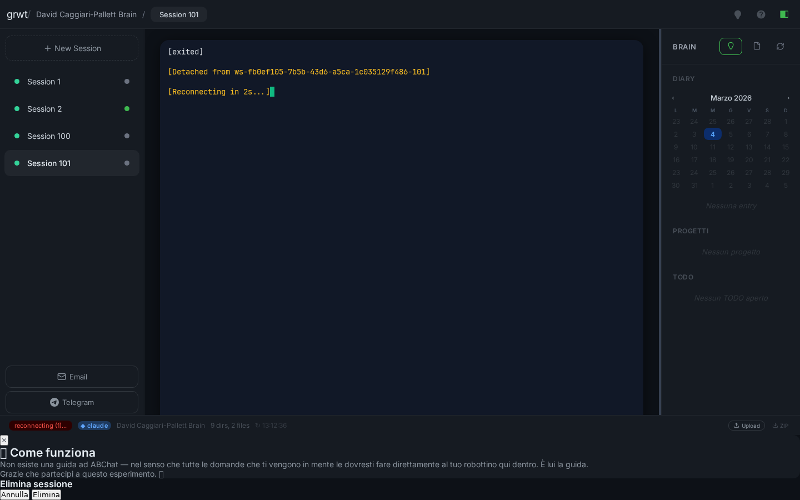
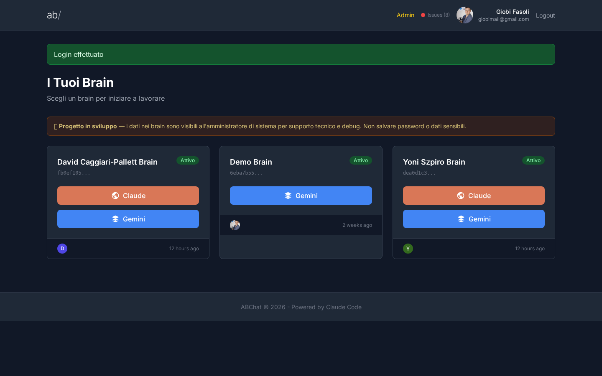

L'interfaccia terminale ora usa solo il tema zen (scuro, pulito, spaziato). Il selettore di tema e il tema chiaro sono stati rimossi. Tutti i colori, le spaziature e i font sono quelli previsti dal design zen.
Rimosso il tema chiaro e il selettore
Prima c'era un bottone nell'angolo in alto a destra per cambiare tema. Ora l'interfaccia usa solo lo stile scuro "zen" — piu' elegante, piu' leggibile, meno confusione.
Interfaccia terminale verificata
Aperto il terminale di David su generations. Colori, spaziature, sidebar, sessioni — tutto funziona come previsto.

Terminale WebSSH con tema zen — sidebar sessioni a sinistra, brain explorer a destra, terminale al centro
Dashboard login funzionante
La pagina di login e la dashboard con i brain funzionano regolarmente. Il login tramite link magico porta direttamente alla lista dei brain.

Dashboard ABChat dopo il login — 3 brain attivi visibili
Codice piu' snello
Rimosse circa 235 righe di codice CSS e JavaScript che gestivano i temi multipli. Meno codice = meno cose che possono rompersi.
Riepilogo
Campo
Valore
Server
generations (135.181.144.5)
File modificato
resources/views/webssh/terminal.blade.php
Righe prima
3701
Righe dopo
3466 (-235)
Scenario
Post-deploy check
Iterazioni
2 (primo tentativo rotto, secondo OK)
Verdetto
HEALTHY
Modifiche applicate
1. Rimosso blocco CSS body.theme-light (righe 994-1198, -205 righe)
— Stili del tema chiaro, non piu' necessari
2. Rimosso bottone toggle tema dalla topbar (3 righe HTML)
— <button id="theme-btn" onclick="toggleTheme()">
3. Sostituito Theme Switcher JS (28 righe) con:
document.body.classList.add('theme-zen');
— Applica il tema zen all'avvio, senza toggle
4. Rimosso isLight check in initTerminal()
— fontFamily fissato a JetBrains Mono NF
Note
TENTATIVO 1 (FALLITO):
Sed massivo su tutti i colori CSS base — 140+ sostituzioni.
Risultato: CSS rotto, colori non corrispondenti.
TENTATIVO 2 (SUCCESSO):
Approccio conservativo: mantenere body.theme-zen CSS intatto,
applicare la classe via JS, rimuovere solo il toggle e theme-light.
Il CSS zen sovrascrive il dark base tramite specificita' CSS.
Verifica Playwright:
- body.className = 'theme-zen' ✓
- body bg = rgb(13,17,23) = #0d1117 ✓
- topbar bg = rgb(22,27,34) = #161b22, h=52px ✓
- #theme-btn = null (rimosso) ✓
- Sessions sidebar: 4 visibili ✓